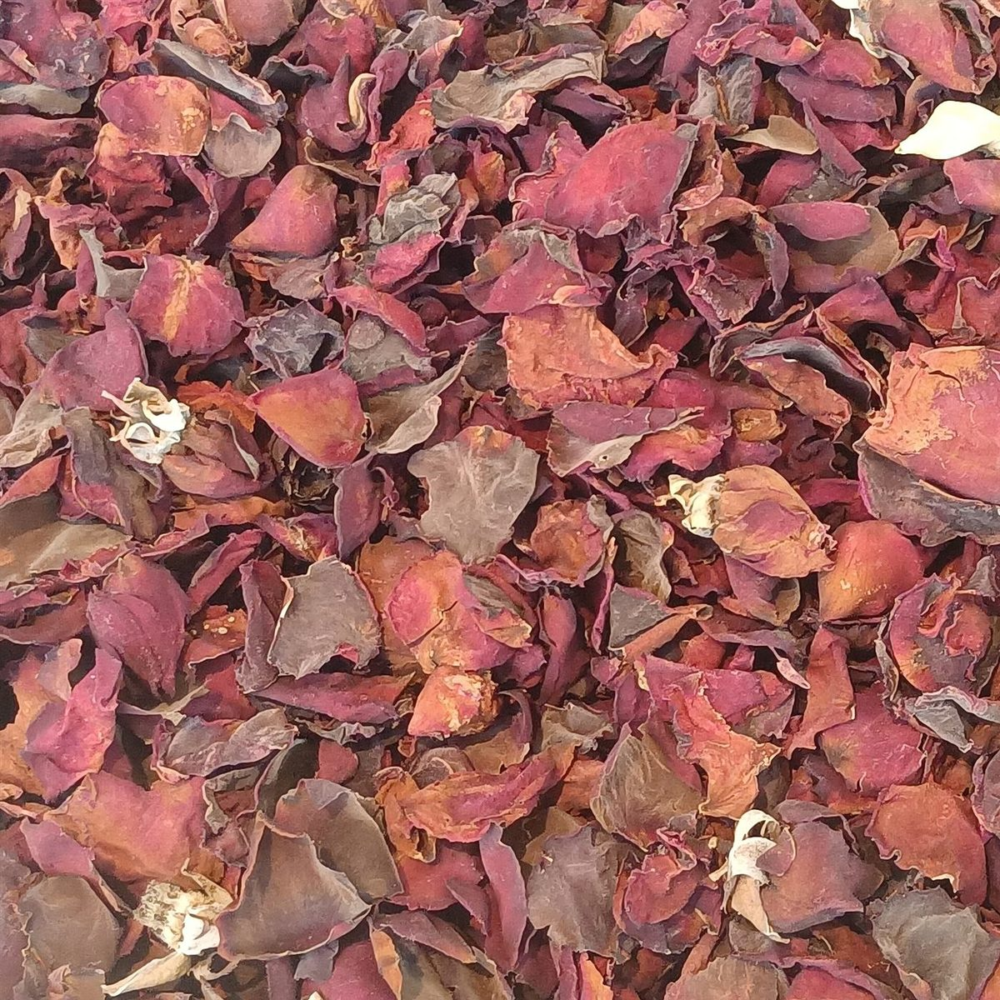
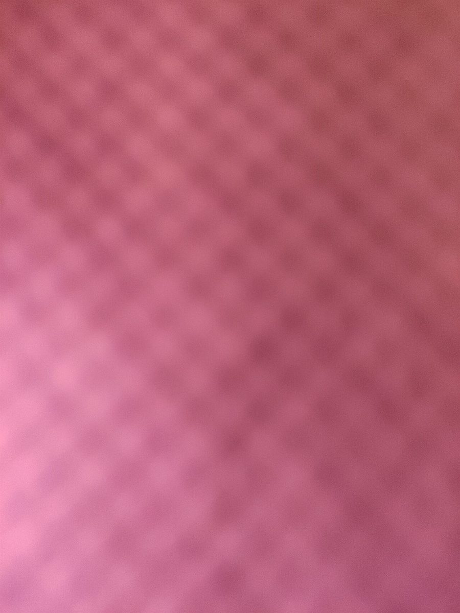
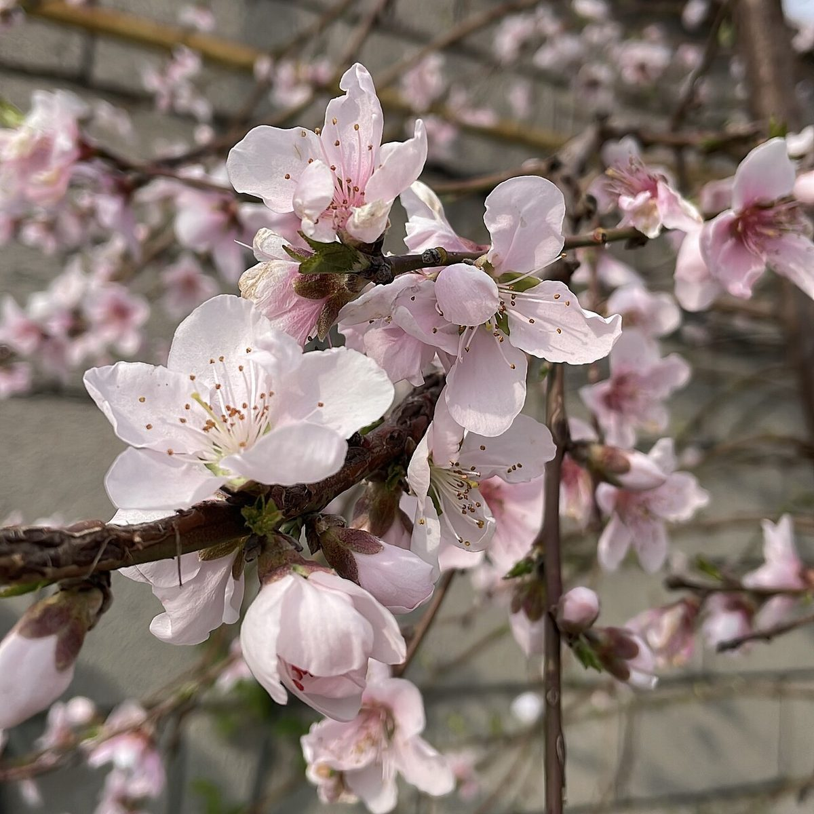
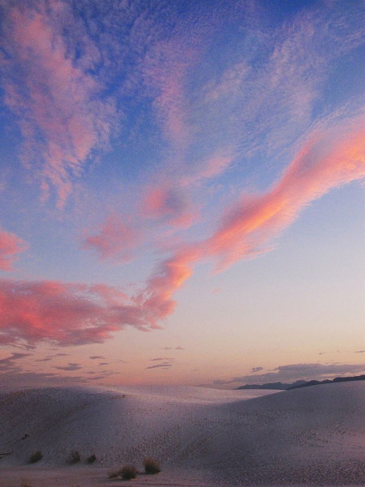
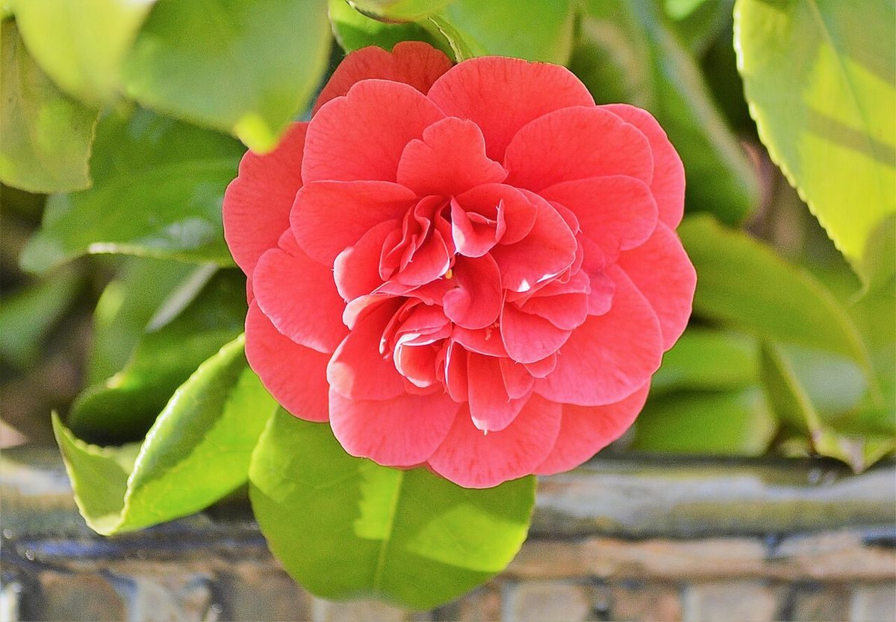

カフェ / 長野県諏訪市
Hoppeポッフェルチェス
長野県諏訪市のカフェ「Hoppe ポッフェルチェス」のご案内ページです。営業時間やメニューなど、詳しいことは準備中。まずはInstagramをのぞいてみてください。


制作側の連想
制作側の連想(お店の理念・由来とは無関係)
「Hoppe」の文字の中に、丸がふたつ。
屋号の由来は分かりません。制作側は、ローマ字の「Hoppe」にpが二つ並んでいるのを見て、ふっくらした丸がふたつ並ぶ形を連想しました。そこから日本語の「ほっぺ」を思い浮かべ、このページは「ほっぺのような丸」と、頬の赤みを思わせる桃色の色味で組んでいます。お店の考えとは関係のない、制作側だけの連想です。
丸をふたつ並べる
桃色の見本(イメージ)
丸と丸を、ふたつずつ。
写真は国外・撮影地不明のフリー素材で、お店や諏訪市内の写真ではありません。色の雰囲気を見るための並べ方です。


桃色濃い桃色


花びらの色頬紅の色


夕雲の色赤の色
ご案内
ご案内
お店のこと(確認できたものだけ)
| 所在地 | 〒392-0004 長野県諏訪市諏訪2丁目2-1 |
|---|---|
| 電話 | なし |
| 営業時間 | 準備中 |
| 定休日 | 準備中 |
| ご予約 | 準備中 |
| 駐車場 | 準備中 |
| SNS | Instagram @hoppe_poffe |